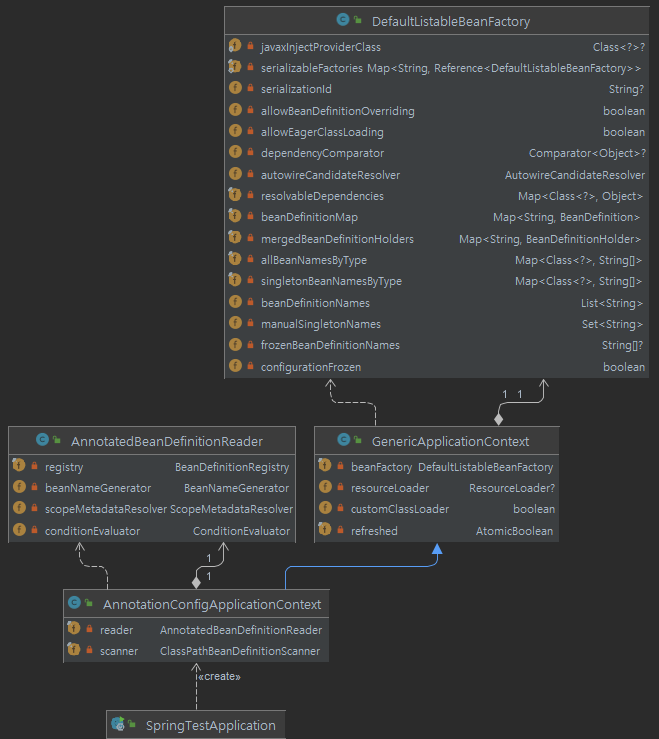
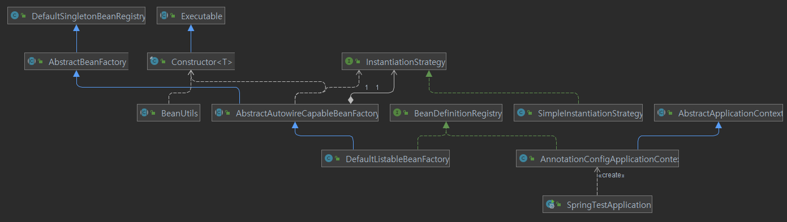

스프링 bean생성원리 분석(1)
– 스프링 따라하기 –
개요
SpringFramework의 AnnotationConfigApplicationContext 생성을 통한 빈 등록 및 빈 생성 절차를 알아보자.
SpringTestApplication.java
ApplicationContext context = new AnnotationConfigApplicationContext(AppConfig.class);
String[] beanNames = context.getBeanDefinitionNames();
for (String name : beanNames) {
System.out.println(name);
}
-
@Configuration을 정의한 AppConfig.java를 이용해서
AnnotationConfigApplicationContext를 생성한다. -
AnnotationConfigApplicationContext를 생성할 때 빈이 등록,생성되는데 디버깅을 통해 대략적인 순서를 알아보자.
AnnotationConfigApplicationContext.java
public AnnotationConfigApplicationContext(Class<?>... componentClasses) {
this();
register(componentClasses);
refresh();
}
- 생성자 코드 중에
register메서드는 빈 등록,refresh메서드는 빈 생성을 담당한다.
1. register 메서드 - 빈 등록
@Override
public void register(Class<?>... componentClasses) {
Assert.notEmpty(componentClasses, "At least one component class must be specified");
StartupStep registerComponentClass = this.getApplicationStartup().start("spring.context.component-classes.register")
.tag("classes", () -> Arrays.toString(componentClasses));
this.reader.register(componentClasses);
registerComponentClass.end();
}
- this.reader.register(componentClasses); 메서드로 이동하면 ,
AnnotatedBeanDefinitionReader클래스로 이동한다.
AnnotatedBeanDefinitionReader.java
- 상단 주석을 보면, Register a bean from the given bean class, deriving its metadata from class-declared annotations. 이라는 표현이 있다. 프로그래머가 annotation으로 정의한 빈을 등록하는 곳 같다.
private <T> void doRegisterBean(Class<T> beanClass, @Nullable String name,
@Nullable Class<? extends Annotation>[] qualifiers, @Nullable Supplier<T> supplier,
@Nullable BeanDefinitionCustomizer[] customizers) {
AnnotatedGenericBeanDefinition abd = new AnnotatedGenericBeanDefinition(beanClass);
if (this.conditionEvaluator.shouldSkip(abd.getMetadata())) {
return;
}
abd.setInstanceSupplier(supplier);
ScopeMetadata scopeMetadata = this.scopeMetadataResolver.resolveScopeMetadata(abd);
abd.setScope(scopeMetadata.getScopeName());
String beanName = (name != null ? name : this.beanNameGenerator.generateBeanName(abd, this.registry));
AnnotationConfigUtils.processCommonDefinitionAnnotations(abd);
if (qualifiers != null) {
for (Class<? extends Annotation> qualifier : qualifiers) {
if (Primary.class == qualifier) {
abd.setPrimary(true);
}
else if (Lazy.class == qualifier) {
abd.setLazyInit(true);
}
else {
abd.addQualifier(new AutowireCandidateQualifier(qualifier));
}
}
}
if (customizers != null) {
for (BeanDefinitionCustomizer customizer : customizers) {
customizer.customize(abd);
}
}
BeanDefinitionHolder definitionHolder = new BeanDefinitionHolder(abd, beanName);
definitionHolder = AnnotationConfigUtils.applyScopedProxyMode(scopeMetadata, definitionHolder, this.registry);
BeanDefinitionReaderUtils.registerBeanDefinition(definitionHolder, this.registry);
}
- 마지막 줄의
BeanDefinitionReaderUtils클래스의registerBeanDefinition메서드를 통해 빈이 등록된다.
GenericApplicationContext.java
- 주석에
BeanDefinitionRegistry의 구현체라고 되어있다.
//---------------------------------------------------------------------
// Implementation of BeanDefinitionRegistry
//---------------------------------------------------------------------
@Override
public void registerBeanDefinition(String beanName, BeanDefinition beanDefinition)
throws BeanDefinitionStoreException {
this.beanFactory.registerBeanDefinition(beanName, beanDefinition);
}
- this.beanFactory는
DefaultListableBeanFactory타입의 상수객체이다.- private final DefaultListableBeanFactory beanFactory;
- private final DefaultListableBeanFactory beanFactory;
DefaultListableBeanFactory.java
DefaultListableBeanFactory클래스는 bean을 등록,조회하는 역할을 한다. (등록된 빈도 정의되어 있다.)- 빈 등록 객체 : Map<String, BeanDefinition> beanDefinitionMap
//---------------------------------------------------------------------
// Implementation of BeanDefinitionRegistry interface
//---------------------------------------------------------------------
@Override
public void registerBeanDefinition(String beanName, BeanDefinition beanDefinition)
throws BeanDefinitionStoreException {
Assert.hasText(beanName, "Bean name must not be empty");
Assert.notNull(beanDefinition, "BeanDefinition must not be null");
if (beanDefinition instanceof AbstractBeanDefinition) {
try {
((AbstractBeanDefinition) beanDefinition).validate();
}
catch (BeanDefinitionValidationException ex) {
throw new BeanDefinitionStoreException(beanDefinition.getResourceDescription(), beanName,
"Validation of bean definition failed", ex);
}
}
BeanDefinition existingDefinition = this.beanDefinitionMap.get(beanName);
if (existingDefinition != null) {
if (!isAllowBeanDefinitionOverriding()) {
throw new BeanDefinitionOverrideException(beanName, beanDefinition, existingDefinition);
}
else if (existingDefinition.getRole() < beanDefinition.getRole()) {
// e.g. was ROLE_APPLICATION, now overriding with ROLE_SUPPORT or ROLE_INFRASTRUCTURE
if (logger.isInfoEnabled()) {
logger.info("Overriding user-defined bean definition for bean '" + beanName +
"' with a framework-generated bean definition: replacing [" +
existingDefinition + "] with [" + beanDefinition + "]");
}
}
else if (!beanDefinition.equals(existingDefinition)) {
if (logger.isDebugEnabled()) {
logger.debug("Overriding bean definition for bean '" + beanName +
"' with a different definition: replacing [" + existingDefinition +
"] with [" + beanDefinition + "]");
}
}
else {
if (logger.isTraceEnabled()) {
logger.trace("Overriding bean definition for bean '" + beanName +
"' with an equivalent definition: replacing [" + existingDefinition +
"] with [" + beanDefinition + "]");
}
}
this.beanDefinitionMap.put(beanName, beanDefinition);
}
else {
if (hasBeanCreationStarted()) {
// Cannot modify startup-time collection elements anymore (for stable iteration)
synchronized (this.beanDefinitionMap) {
this.beanDefinitionMap.put(beanName, beanDefinition);
List<String> updatedDefinitions = new ArrayList<>(this.beanDefinitionNames.size() + 1);
updatedDefinitions.addAll(this.beanDefinitionNames);
updatedDefinitions.add(beanName);
this.beanDefinitionNames = updatedDefinitions;
removeManualSingletonName(beanName);
}
}
else {
// Still in startup registration phase
this.beanDefinitionMap.put(beanName, beanDefinition);
this.beanDefinitionNames.add(beanName);
removeManualSingletonName(beanName);
}
this.frozenBeanDefinitionNames = null;
}
if (existingDefinition != null || containsSingleton(beanName)) {
resetBeanDefinition(beanName);
}
else if (isConfigurationFrozen()) {
clearByTypeCache();
}
}
-
BeanDefinition existingDefinition = this.beanDefinitionMap.get(beanName);
-
빈이름이 등록되어있는지 조회하여 존재하지 않으면, 빈을 등록한다.
-
this.beanDefinitionMap.put(beanName, beanDefinition); this.beanDefinitionNames.add(beanName); - register 구조 참조 
2. refresh 메서드 - 빈 생성
AbstractApplicationContext.java
- finishBeanFactoryInitialization(beanFactory) 메서드는 실제 빈을 생성하는 로직이다.
@Override
public void refresh() throws BeansException, IllegalStateException {
synchronized (this.startupShutdownMonitor) {
StartupStep contextRefresh = this.applicationStartup.start("spring.context.refresh");
// Prepare this context for refreshing.
prepareRefresh();
// Tell the subclass to refresh the internal bean factory.
ConfigurableListableBeanFactory beanFactory = obtainFreshBeanFactory();
// Prepare the bean factory for use in this context.
prepareBeanFactory(beanFactory);
try {
// Allows post-processing of the bean factory in context subclasses.
postProcessBeanFactory(beanFactory);
StartupStep beanPostProcess = this.applicationStartup.start("spring.context.beans.post-process");
// Invoke factory processors registered as beans in the context.
invokeBeanFactoryPostProcessors(beanFactory);
// Register bean processors that intercept bean creation.
registerBeanPostProcessors(beanFactory);
beanPostProcess.end();
// Initialize message source for this context.
initMessageSource();
// Initialize event multicaster for this context.
initApplicationEventMulticaster();
// Initialize other special beans in specific context subclasses.
onRefresh();
// Check for listener beans and register them.
registerListeners();
// Instantiate all remaining (non-lazy-init) singletons.
finishBeanFactoryInitialization(beanFactory);
// Last step: publish corresponding event.
finishRefresh();
}
catch (BeansException ex) {
if (logger.isWarnEnabled()) {
logger.warn("Exception encountered during context initialization - " +
"cancelling refresh attempt: " + ex);
}
// Destroy already created singletons to avoid dangling resources.
destroyBeans();
// Reset 'active' flag.
cancelRefresh(ex);
// Propagate exception to caller.
throw ex;
}
finally {
// Reset common introspection caches in Spring's core, since we
// might not ever need metadata for singleton beans anymore...
resetCommonCaches();
contextRefresh.end();
}
}
}
finishBeanFactoryInitialization 메서드
- 주석 : Finish the initialization of this context’s bean factory, initializing all remaining singleton beans.
protected void finishBeanFactoryInitialization(ConfigurableListableBeanFactory beanFactory) {
// Initialize conversion service for this context.
if (beanFactory.containsBean(CONVERSION_SERVICE_BEAN_NAME) &&
beanFactory.isTypeMatch(CONVERSION_SERVICE_BEAN_NAME, ConversionService.class)) {
beanFactory.setConversionService(
beanFactory.getBean(CONVERSION_SERVICE_BEAN_NAME, ConversionService.class));
}
// Register a default embedded value resolver if no BeanFactoryPostProcessor
// (such as a PropertySourcesPlaceholderConfigurer bean) registered any before:
// at this point, primarily for resolution in annotation attribute values.
if (!beanFactory.hasEmbeddedValueResolver()) {
beanFactory.addEmbeddedValueResolver(strVal -> getEnvironment().resolvePlaceholders(strVal));
}
// Initialize LoadTimeWeaverAware beans early to allow for registering their transformers early.
String[] weaverAwareNames = beanFactory.getBeanNamesForType(LoadTimeWeaverAware.class, false, false);
for (String weaverAwareName : weaverAwareNames) {
getBean(weaverAwareName);
}
// Stop using the temporary ClassLoader for type matching.
beanFactory.setTempClassLoader(null);
// Allow for caching all bean definition metadata, not expecting further changes.
beanFactory.freezeConfiguration();
// Instantiate all remaining (non-lazy-init) singletons.
beanFactory.preInstantiateSingletons();
}
- beanFactory.preInstantiateSingletons(); 메서드에서 싱글톤 객체를 생성한다.
DefaultListableBeanFactory.java
- 1번의 register메서드에서 등록한 this.beanDefinitionNames를 대상으로 빈 생성을 수행한다.
- isFactoryBean(beanName) 가 false이므로 getBean(beanName); 메서드를 수행한다.
@Override
public void preInstantiateSingletons() throws BeansException {
// Iterate over a copy to allow for init methods which in turn register new bean definitions.
// While this may not be part of the regular factory bootstrap, it does otherwise work fine.
List<String> beanNames = new ArrayList<>(this.beanDefinitionNames);
// Trigger initialization of all non-lazy singleton beans...
for (String beanName : beanNames) {
RootBeanDefinition bd = getMergedLocalBeanDefinition(beanName);
if (!bd.isAbstract() && bd.isSingleton() && !bd.isLazyInit()) {
if (isFactoryBean(beanName)) {
Object bean = getBean(FACTORY_BEAN_PREFIX + beanName);
if (bean instanceof FactoryBean) {
FactoryBean<?> factory = (FactoryBean<?>) bean;
boolean isEagerInit;
if (System.getSecurityManager() != null && factory instanceof SmartFactoryBean) {
isEagerInit = AccessController.doPrivileged(
(PrivilegedAction<Boolean>) ((SmartFactoryBean<?>) factory)::isEagerInit,
getAccessControlContext());
}
else {
isEagerInit = (factory instanceof SmartFactoryBean &&
((SmartFactoryBean<?>) factory).isEagerInit());
}
if (isEagerInit) {
getBean(beanName);
}
}
}
else {
getBean(beanName);
}
}
}
....
}
- getBean(beanName); 로 이동하여, doGetBean 구현부로 이동한다.
AbstractBeanFactory.java > doGetBean 메서드
- 싱글톤,프로토타입에 따라 분기하여 객체를 생성한다.
- 싱글톤 : getSingleton 메서드의 콜백메서드인 creaeBean을 살펴보자.
protected <T> T doGetBean(
String name, @Nullable Class<T> requiredType, @Nullable Object[] args, boolean typeCheckOnly)
throws BeansException {
String beanName = transformedBeanName(name);
Object beanInstance;
// Eagerly check singleton cache for manually registered singletons.
Object sharedInstance = getSingleton(beanName);
if (sharedInstance != null && args == null) {
...
}
else {
...
// Create bean instance.
if (mbd.isSingleton()) {
sharedInstance = getSingleton(beanName, () -> {
try {
return createBean(beanName, mbd, args);
}
catch (BeansException ex) {
// Explicitly remove instance from singleton cache: It might have been put there
// eagerly by the creation process, to allow for circular reference resolution.
// Also remove any beans that received a temporary reference to the bean.
destroySingleton(beanName);
throw ex;
}
});
beanInstance = getObjectForBeanInstance(sharedInstance, name, beanName, mbd);
}
else if (mbd.isPrototype()) {
....
}
}
return adaptBeanInstance(name, beanInstance, requiredType);
}
DefaultSingletonBeanRegistry.java > getSingleton 메서드
- singletonObject = singletonFactory.getObject(); 를 통해서 doGetBean메서드의 createBean구현부로 이동가능함.
public Object getSingleton(String beanName, ObjectFactory<?> singletonFactory) {
Assert.notNull(beanName, "Bean name must not be null");
synchronized (this.singletonObjects) {
Object singletonObject = this.singletonObjects.get(beanName);
.....
try {
singletonObject = singletonFactory.getObject();
newSingleton = true;
}
catch (IllegalStateException ex) {
....
}
....
if (newSingleton) {
addSingleton(beanName, singletonObject);
}
}
return singletonObject;
}
}
AbstractAutowireCapableBeanFactory.java > createBean
- Object beanInstance = doCreateBean(beanName, mbdToUse, args); 으로 이동
@Override
protected Object createBean(String beanName, RootBeanDefinition mbd, @Nullable Object[] args)
throws BeanCreationException {
....
try {
Object beanInstance = doCreateBean(beanName, mbdToUse, args);
if (logger.isTraceEnabled()) {
logger.trace("Finished creating instance of bean '" + beanName + "'");
}
return beanInstance;
}
catch (BeanCreationException | ImplicitlyAppearedSingletonException ex) {
...
}
....
}
AbstractAutowireCapableBeanFactory.java > doCreateBean 메서드
- 빈은 BeanWrapper타입으로 감싸서 생성된다.
- instanceWrapper = createBeanInstance(beanName, mbd, args); 으로 이동
protected Object doCreateBean(String beanName, RootBeanDefinition mbd, @Nullable Object[] args)
throws BeanCreationException {
// Instantiate the bean.
BeanWrapper instanceWrapper = null;
if (mbd.isSingleton()) {
instanceWrapper = this.factoryBeanInstanceCache.remove(beanName);
}
if (instanceWrapper == null) {
instanceWrapper = createBeanInstance(beanName, mbd, args);
}
....
return exposedObject;
}
AbstractAutowireCapableBeanFactory.java > createBeanInstance
- instantiateBean 메서드로 이동
protected BeanWrapper createBeanInstance(String beanName, RootBeanDefinition mbd, @Nullable Object[] args) {
// Make sure bean class is actually resolved at this point.
....
// No special handling: simply use no-arg constructor.
return instantiateBean(beanName, mbd);
}
AbstractAutowireCapableBeanFactory.java > instantiateBean
- getInstantiationStrategy().instantiate(mbd, beanName, this); 으로 이동
protected BeanWrapper instantiateBean(String beanName, RootBeanDefinition mbd) {
try {
Object beanInstance;
if (System.getSecurityManager() != null) {
beanInstance = AccessController.doPrivileged(
(PrivilegedAction<Object>) () -> getInstantiationStrategy().instantiate(mbd, beanName, this),
getAccessControlContext());
}
else {
beanInstance = getInstantiationStrategy().instantiate(mbd, beanName, this);
}
BeanWrapper bw = new BeanWrapperImpl(beanInstance);
initBeanWrapper(bw);
return bw;
}
catch (Throwable ex) {
throw new BeanCreationException(
mbd.getResourceDescription(), beanName, "Instantiation of bean failed", ex);
}
}
SimpleInstantiationStrategy.java > instantiate
- CGLIB override 검사를 하고, 드디어 인스턴스를 생성한다.
- BeanUtils.instantiateClass(constructorToUse); 으로 이동
public Object instantiate(RootBeanDefinition bd, @Nullable String beanName, BeanFactory owner) {
// Don't override the class with CGLIB if no overrides.
if (!bd.hasMethodOverrides()) {
Constructor<?> constructorToUse;
synchronized (bd.constructorArgumentLock) {
constructorToUse = (Constructor<?>) bd.resolvedConstructorOrFactoryMethod;
if (constructorToUse == null) {
final Class<?> clazz = bd.getBeanClass();
if (clazz.isInterface()) {
throw new BeanInstantiationException(clazz, "Specified class is an interface");
}
try {
if (System.getSecurityManager() != null) {
constructorToUse = AccessController.doPrivileged(
(PrivilegedExceptionAction<Constructor<?>>) clazz::getDeclaredConstructor);
}
else {
constructorToUse = clazz.getDeclaredConstructor();
}
bd.resolvedConstructorOrFactoryMethod = constructorToUse;
}
catch (Throwable ex) {
throw new BeanInstantiationException(clazz, "No default constructor found", ex);
}
}
}
return BeanUtils.instantiateClass(constructorToUse);
}
else {
// Must generate CGLIB subclass.
return instantiateWithMethodInjection(bd, beanName, owner);
}
}
BeanUtils.java > instantiateClass 메서드
- ReflectionUtils 클래스에서 인스턴스를 생성한다.
public static <T> T instantiateClass(Constructor<T> ctor, Object... args) throws BeanInstantiationException {
Assert.notNull(ctor, "Constructor must not be null");
try {
ReflectionUtils.makeAccessible(ctor);
...
else {
Class<?>[] parameterTypes = ctor.getParameterTypes();
Assert.isTrue(args.length <= parameterTypes.length, "Can't specify more arguments than constructor parameters");
Object[] argsWithDefaultValues = new Object[args.length];
for (int i = 0 ; i < args.length; i++) {
if (args[i] == null) {
Class<?> parameterType = parameterTypes[i];
argsWithDefaultValues[i] = (parameterType.isPrimitive() ? DEFAULT_TYPE_VALUES.get(parameterType) : null);
}
else {
argsWithDefaultValues[i] = args[i];
}
}
return ctor.newInstance(argsWithDefaultValues);
}
}
....
}
AbstractAutowireCapableBeanFactory.java > initializeBean
- 인스턴스 생성 후, 초기화를 진행한다.
- applyBeanPostProcessorsBeforeInitialization -> invokeInitMethods -> applyBeanPostProcessorsAfterInitialization
protected Object initializeBean(String beanName, Object bean, @Nullable RootBeanDefinition mbd) {
if (System.getSecurityManager() != null) {
AccessController.doPrivileged((PrivilegedAction<Object>) () -> {
invokeAwareMethods(beanName, bean);
return null;
}, getAccessControlContext());
}
else {
invokeAwareMethods(beanName, bean);
}
Object wrappedBean = bean;
if (mbd == null || !mbd.isSynthetic()) {
wrappedBean = applyBeanPostProcessorsBeforeInitialization(wrappedBean, beanName);
}
try {
invokeInitMethods(beanName, wrappedBean, mbd);
}
catch (Throwable ex) {
throw new BeanCreationException(
(mbd != null ? mbd.getResourceDescription() : null),
beanName, "Invocation of init method failed", ex);
}
if (mbd == null || !mbd.isSynthetic()) {
wrappedBean = applyBeanPostProcessorsAfterInitialization(wrappedBean, beanName);
}
return wrappedBean;
}
DefaultSingletonBeanRegistry.java > addSingleton 메서드
- singletonObjects 객체에 빈을 추가한다.
protected void addSingleton(String beanName, Object singletonObject) {
synchronized (this.singletonObjects) {
this.singletonObjects.put(beanName, singletonObject);
this.singletonFactories.remove(beanName);
this.earlySingletonObjects.remove(beanName);
this.registeredSingletons.add(beanName);
}
}
reflesh 구조 참조

정리
SpringFramework의 AnnotationConfigApplicationContext 생성을 통한 빈 등록 및 빈 생성 절차를 알아보았다.
AnnotationConfigApplicationContext 생성자는 register 메서드와 reflesh메서드를 호출한다.
register는 빈 등록업무를 진행한다. DefaultListableBeanFactory 클래스의 Map<String, BeanDefinition> beanDefinitionMap을 통해 등록된다.
reflesh는 beanDefinitionMap에 등록된 빈을 대상으로 생성을 진행한다. DefaultSingletonBeanRegistry 클래스의 private final Map<String, Object> singletonObjects을 통해 등록된다.
출처
1.빈 생성절차
https://private-space.tistory.com/71?category=865490
2.DefaultListableBeanFactory 정리글
https://okky.kr/article/563392